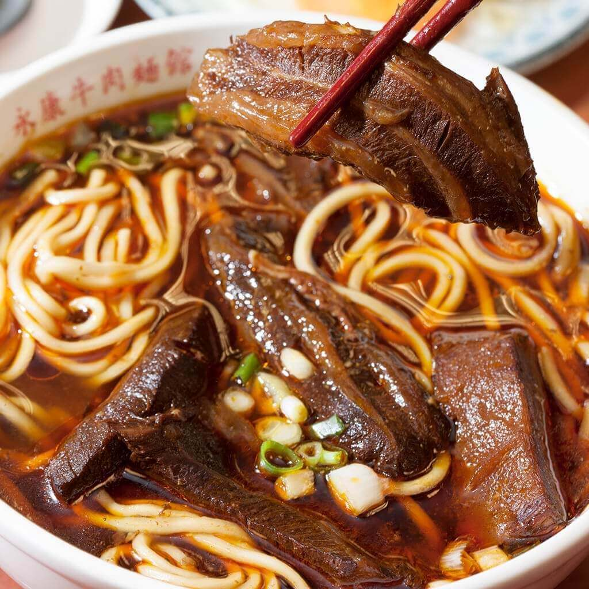

民以食為天的臺灣，幾乎是三步一小吃店，五步一大餐廳。
而臺灣獨有的本土料理，風靡全球，嚐味一次，必將永生難忘。
| 臺灣必吃小吃 Top 10 | ||
|---|---|---|
| 排 名 | 中 文 品 項 | 英 文 品 項 |
| Top1 | 牛肉麵 | Beef noodles |
| Top2 | 小籠包 | Pork soup dumplings |
| Top3 | 滷肉飯 | Braised pork rice |
| Top4 | 大腸（蚵仔）麵線 | Oyster and pork intestine thin noodles |
| Top5 | 蚵仔煎 | Oyster omelet |
| Top6 | 臭豆腐 | Stinky tofu |
| Top7 | 雞排 | Fried chicken cutlet |
| Top8 | 珍珠奶茶 | Milk tea with tapioca balls |
| Top9 | 刨冰 | Shaved ice |
| Top10 | 鳳梨酥 | Pineapple cake |
|  | ||
|---|---|---|
| 臺灣必吃牛肉麵 Top 3 | ||
| 排 名 | 店 鋪 名 稱 | 地 區 |
| Top1 | 永康牛肉麵 | 台北市大安區 |
| Top2 | 牛店精燉牛肉麵 | 台北市萬華區 |
| Top3 | 劉山東牛肉麵 | 台北市中正區 |
| 臺灣必吃小籠包 Top 3 | ||
|---|---|---|
| 排 名 | 店 鋪 名 稱 | 地 區 |
| Top1 | 點水樓 | 台北市中正區 |
| Top2 | 鼎泰豐 | 全 台 門 市 |
| Top3 | 正好鮮肉小籠包 | 宜蘭市泰山路 |
| 臺灣必吃滷肉飯 Top 3 | ||
|---|---|---|
| 排 名 | 店 鋪 名 稱 | 地 區 |
| Top1 | 今大滷肉飯 | 新北市三重區 |
| Top2 | 金峰滷肉飯 | 台北市中正區 |
| Top3 | 阿義滷肉飯 | 台北市萬華區 |